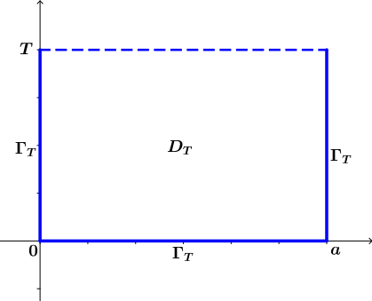

3.2. Çözümün Tekliği ve Kararlılığı
Kayıt Tarihi:
Son Güncelleme:
Bir önceki bölümde ısı denkleminin çözümünün varlığını elde etmiştik. Fakat çözümlerin Hadamard anlamında iyi tanımlı olmasını da istiyoruz. Yani çözümlerin tekliği ve kararlılığına ihtiyacımız var, bu bölümde bunları kanıtlayacağız.
Anahtar Kelimeler: çözümün tekliği · kararlı çözüm · maksimum prensibiBuraya kadar ele aldığımız sınır değer probleminin çözümüne ulaştık, şimdi ise bu çözümün Hadamard anlamında kararlılığını araştıracağız. Yani bu çözümün tek olduğunu ve başlangıç koşullarına sürekli olarak bağımlı olduğunu göstereceğiz. Bunları göstermek için maksimum prensibi adı verilen bir sonucu kullanacağız, bu sonuç aslında ısının sıcak ortamdan soğuk ortama doğru yayıldığının matematiksel bir ifadesinden başka birşey değildir.
Teorem 3.2.1 (Isı Denklemi İçin Maksimum Prensibi)
Keyfi bir $T$ pozitif sayısı için $$D_T:=\{ (x,t)\in D:\;t\geq T \}\text{,}\quad \overline{D}_T:=\{ (x,t)\in \overline{D}:\;t\geq T \}\quad\text{ve}\quad \Gamma_T:=\overline{D}\backslash D_t$$ kümelerini tanımlayalım. Bu durumda eğer $u:\overline{D}_T\rightarrow\mathbb{R}$ sürekli fonksiyonu $D_T$ kümesinde ısı denklemini sağlıyorsa maksimum ve minimum değerlerini $\Gamma_T$ kümesinde alır.
Şekil 3.3: Teoremde tanımlanan $\Gamma_T$ kümesi.
İspat: Kabul edelim ki $u:\overline{D}_T\rightarrow\mathbb{R}$ sürekli fonksiyonu $D_T$ kümesinde ısı denklemini sağlasın, bir $(x_0,t_0)\in D_T$ noktasında $m$ minimum değerini alsın, ve iddiamızın aksine $\Gamma_T$ üzerindeki minimum değeri $M>m$ olsun. Şimdi yeni bir $v:\overline{D}\rightarrow\mathbb{R}$ fonksiyonunu $$v(x,t):=u(x,t)+\frac{M-m}{2T}(t-t_0)$$ olarak tanımlayalım. Bu durumda $t-t_0\geq T_0$ olduğu açıktır ve eğer $(x,t)\in\Gamma_T$ ise $u(x,t)\geq M$ olacağından $$u(x,t)\geq M-\frac{M-m}{2}=\frac{M+m}{2}>m$$ eşitsizliği sağlanır. Ayrıca $$v(x_0,t_0)=u(x_0,t_0)=m$$ olduğundan $v$ fonksiyonu da bir $(x_1,t_1)\in D_T$ noktasında minimum değere sahip olur. Fakat bu durumda $t_1\lt T$ için $v_t(x_1,t_1)=0$ ($t=T$ için negatif olabilir) ve $v_{xx}(x_1,t_1)\geq 0$ olacağından $$0\geq v_t-ku_{xx}=u_t-ku_{xx}+\frac{M-m}{2T}=\frac{M-m}{2T}>0$$ çelişkisi elde edilir. Dolayısıyle $u$ fonksiyonu $\Gamma_T$ kümesinde minimum değerini almalıdır. Aynı düşünüşle $-u$ fonksiyonunun da $\Gamma_T$ kümesinde minimum değeri alması gerektiğini, yani $u$ fonksiyonun bu kümede maksimum değerini de alması gerektiğini gösterebiliriz.$$\tag*{$\blacksquare$}$$
Teorem 3.2.2
Teorem 3.1.3 ile verilen sınır değer probleminin çözümü olan $u$ fonksiyonu Hadamard anlamında kararlıdır. Ayrıca $f\geq0$ için $u\geq0$'dır.İspat: Çözümün varlığını daha önce gösterdik. Şimdi $u_1$ ve $u_2$ ile sırasıyla başlangıç sıcaklıkları $[0,a]$ aralığında sürekli olan $f$ ve $g$ fonksiyonları ile verilen problemlerin çözümlerini gösterelim. Bu durumda $u_1-u_2$ fonksiyonu da başlangıç sıcaklığı $f-g$ ile verilen problemin çözümü olur ve $\overline{D}_T$ kümesinde süreklidir. Bu durumda eğer $|f-g|$ fonksiyonunun $[0,a]$ aralığındaki maksimum değerini $M_{f-g}$ ile gösterirsek, $u_1-u_2$ fonksiyonu $x=0$ ve $x=a$ için sıfır olduğundan, her $(x,t)\in\overline{D}_T$ için $$|u_1(x,t)-u_2(x,t)|\leq M_{f-g}$$ eşitsizliği sağlanır. $T$ sayısı keyfi olduğundan bu eşitsizlikten başlangıç fonksiyonundaki küçük değişikliklerin çözümü büyük oranda değiştiremeyeceği görülür. Ayrıca eğer $f\equiv g$ ise her $(x,t)\in\overline{D}_T$ için $u_1\equiv u_2$ olacağından $T$ keyfi olduğundan çözümün tekliği de elde edilmiş olur. Son olarak eğer $f\geq0$ ise maksimum prensibinden ve $x=0$ ile $x=a$ noktalarında $u$ fonksiyonunun sıfır olduğundan $u$ fonksiyonunun minimum değerinin sıfır olduğu açıktır.$$\tag*{$\blacksquare$}$$
Yukarıdaki sonuçla sadece kararlılık değil çözümün negatif olmadığı da kanıtlanmıştır. Burada problemimizde sıcaklığı mutlak sıfırdan ölçtük, eğer başka bir ölçek kullanılırsa buradaki negatif olmama durumu değişir, bu durumda çözümün minimum değeri sıfır yerine bu ölçeğe bağlı başka bir sabit olacaktır. Örneğin Celcius derece cinsinden ölçüm yapılırsa bu sabit negatif olan $-273.15$ sayısı olur.
Şimdi son olarak çözümün asimptotik davranışına değineceğiz. Fiziksel olarak, çubuktan ısının uç noktalardan ortama geçtiği ve bu uç noktlarda sıcaklığın sıfır olarak sabit tutulduğu düşünülürse çubuğun her yerinde sıcaklığın zamanla sıfıra yaklaşması beklenir. Bunu matematiksel olarak şöyle gözlemleyebiliriz. Her $n\in\mathbb{N}$ için $|c_n|\lt M$ olacak şekilde bir $M$ sayısı seçilirse, $\alpha:=\pi^2k/a^2$ ve $r:=e^{-at}$ olarak tanımlanırsa $$\left| c_ne^{-n^2\alpha t}\sin\frac{n\pi}{a}x \right|\lt Me^{-n^2\alpha t}\leq Me^{-n\alpha t}=Mr^n$$ olduğu görülür. Böylece $0\lt r\lt 1$ olduğundan $$u(x,t)\leq M\sum\limits_{n=1}^{\infty}r^n=\frac{r}{1-r}=M\frac{e^{-\alpha t}}{1-e^{-\alpha t}}$$ elde edilir. Buradan da $t\rightarrow\infty$ için $u(x,t)\rightarrow0$ olduğu açıkça görülüyor.
Buraya kadar çözdüğümüz problem sınır koşulları değişik olan buna benzer başka problemlerin çözümü için bize temel olabilir. Sıradaki bölümlerde bunlara bazı örnekler vereceğiz. Fakat göreceğiz ki bazı durumlarda bu temel yeterli değildir.
3.1. Çözümün Varlığı
Fourier Analizi
3.3. Uç Noktalarda Farklı Sıcaklıklar